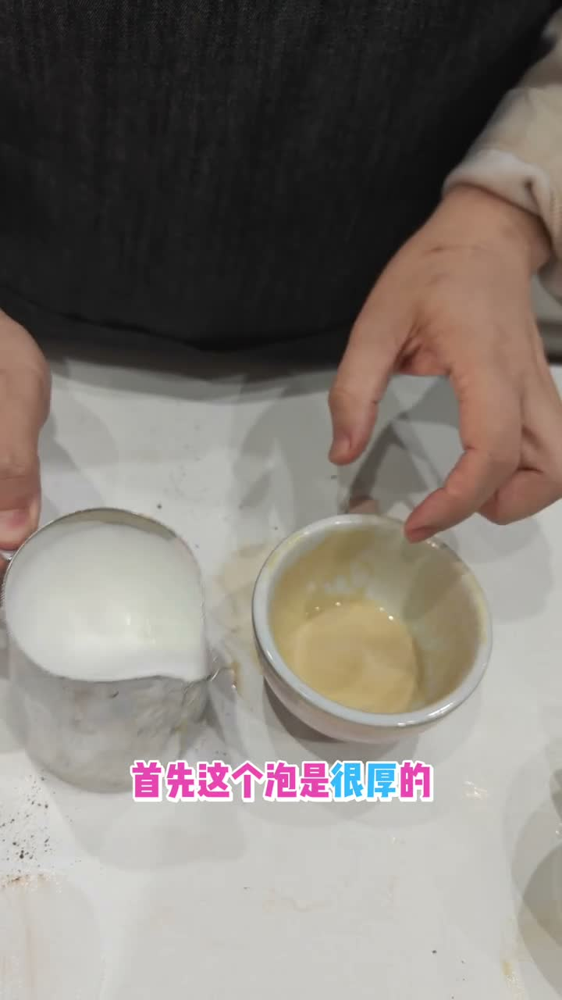
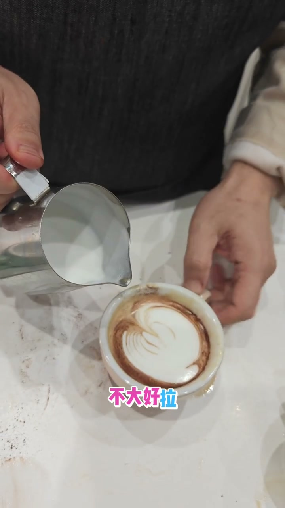
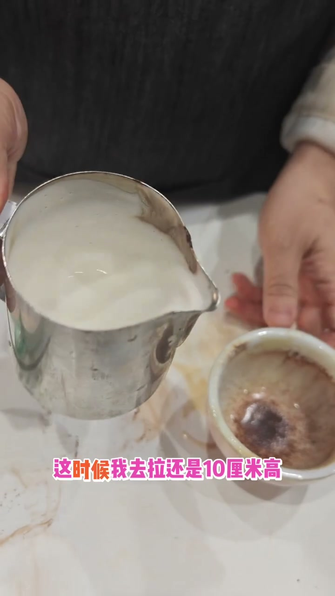
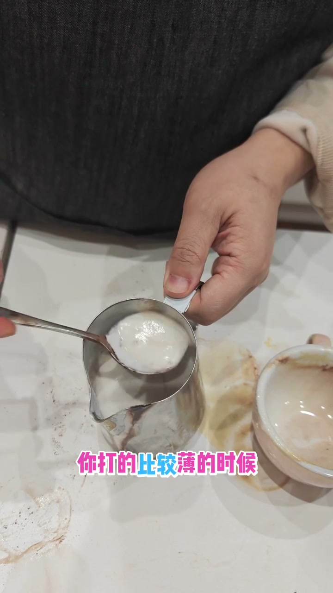
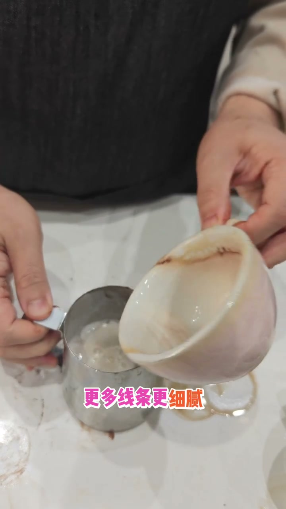
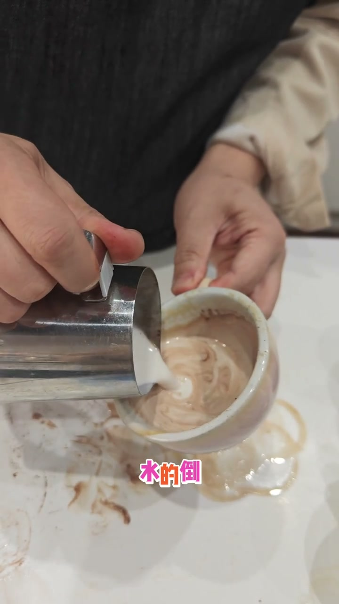
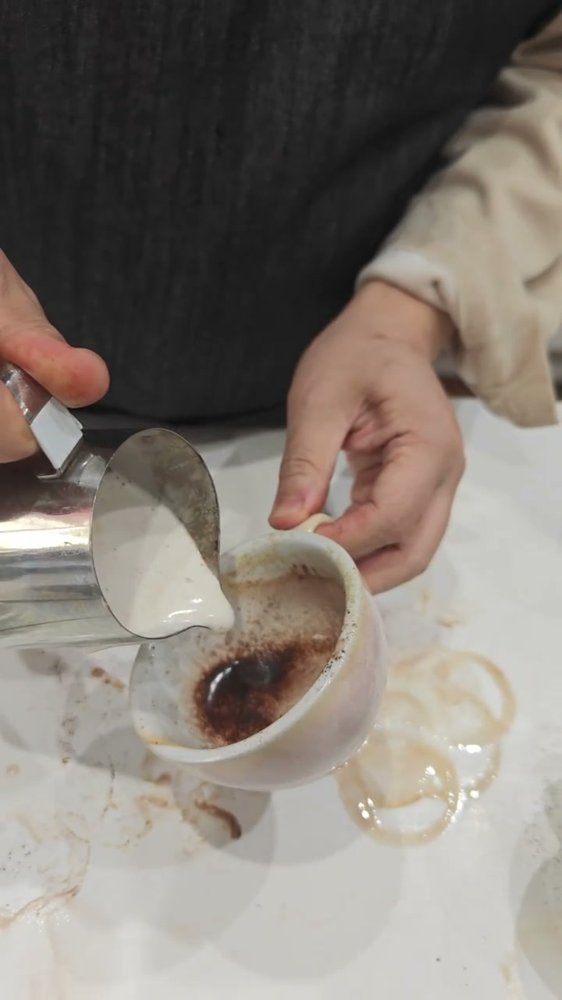
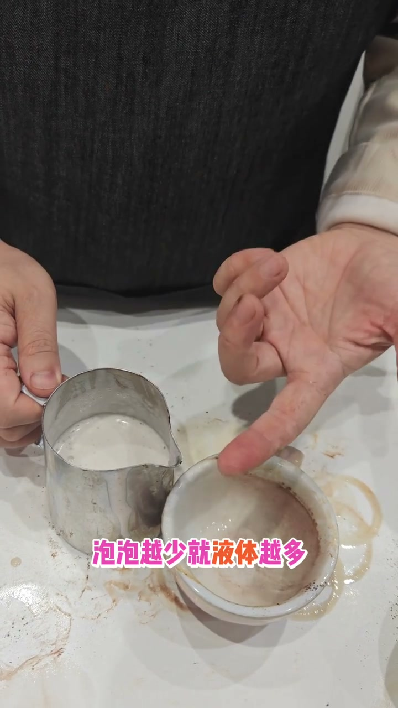
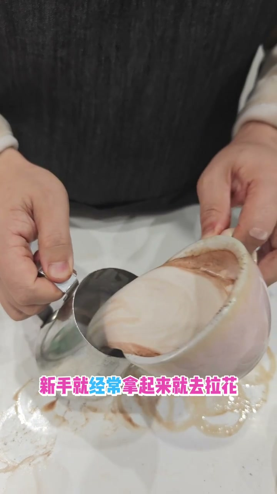

奶泡厚度对拉花的影响
查看原视频 English Version核心要点
- 通过挖奶泡的对比实验，直观展示四种厚度对拉花效果的影响
- 厚奶泡：容易结块发白，拉不出纹路
- 拿铁厚度（中等）：最理想，稳定圆润，纹路清晰
- 薄奶泡：纹路更细腻但容易歪斜变形
- 极薄：液体晃动导致图案扭曲，几乎无法控制
- 核心原理：泡越少→液体越多→流动性越强→图案越容易歪
实验一：厚奶泡拉花
用非常厚的奶泡直接拉花，入水后液面立刻发白，上面再拉一层就白上加白，完全看不出纹路。厚奶泡的流动性差，摆动时奶泡卡在表面，无法形成清晰的线条。


实验二：拿铁厚度（理想状态）
从厚奶泡中挖掉一部分，变成拿铁的泡。同样从10厘米高度注入，入水不会太白，摆动后能清晰呈现出纹路。这是最理想的厚度——稳定性和纹路清晰度达到平衡。


拿铁厚度 = 纹路清晰 + 图案稳定 = 最理想的拉花状态
实验三：薄奶泡拉花
继续挖掉更多奶泡，变得很薄、很水。这时候拉花不会发白，反而颜色更深，纹路更细更多、更细腻。但问题来了——液体太多，流动性太强，奶泡容易歪斜变形。


实验四：极薄奶泡
几乎没泡了。虽然纹路非常多非常细，但由于液体流动性太强，底下的液体会带着整个奶泡到处飘，图案严重扭曲变形，无法控制。

核心原理：液体的流动
泡越少 → 液体越多 → 流动性越强 → 奶泡跟着液体到处漂 → 图案歪斜。反过来，泡越多 → 液体越少 → 流动性越差 → 奶泡结块 → 纹路出不来。所以拿铁厚度（中等厚度）是黄金平衡点。

实操技巧：调节奶泡厚度
如果奶泡太厚：反复在两个杯子之间倒奶，摇动有助于奶泡混合，减少厚度。不断摇晃保持流动性。如果纹路还是出不来，就用勺子挖掉两勺厚的奶泡。

关键动作：来回倒奶 + 持续摇动 = 调节奶泡厚度 = 恢复流动性
详细文字转录（87段）
以下内容按 Whisper 原始分段完整呈现，可能包含识别误差。
- [0:00]我们讲一下什么样的泡比较好拉花
- [0:02]我觉得这个泡是很厚的
- [0:05]很厚
- [0:07]然后如果用这么厚的泡去拉
- [0:09]嘴跟叶面还是保持大概10厘米高
- [0:11]这么厚去拉它就会白掉
- [0:14]然后再去拉
- [0:16]就白上加白
- [0:18]不大好拉
- [0:20]拉不出纹路
- [0:23]那我现在把这个厚的挖掉一些
- [0:25]现在这已经挨下来了
- [0:27]这个是变成拿铁的泡
- [0:29]这时候我去拉
- [0:32]还是10厘米高
- [0:34]你要下去就不会那么白了
- [0:36]然后还是一样做动作
- [0:38]你看就能摆出纹路了
- [0:41]这是拿铁的泡
- [0:43]那如果我现在再把泡挖掉一些
- [0:45]就是打奶泡你打的比较薄的时候
- [0:47]现在就把奶泡挖掉
- [0:50]比较薄的时候
- [0:52]现在很水了
- [0:54]液体状
- [0:56]然后这时候肯定不会白的
- [0:59]泡少就不会白
- [1:01]更黑
- [1:03]然后到纹路就更明显
- [1:05]更多线条
- [1:08]更细腻
- [1:10]那如果再薄
- [1:12]你的几乎要没泡了
- [1:14]还是样举高一点
- [1:17]10厘米高
- [1:19]你看它底下液体就有点水水的
- [1:21]泡就容易歪
- [1:23]那现在再把泡挖回去
- [1:26]我们再回顾一下
- [1:28]这是中等的厚度
- [1:30]你看这是比较理想的
- [1:32]它可以做得比较稳定跟比较圆润
- [1:35]如果泡少就容易歪
- [1:37]扭曲变形
- [1:39]液体的流动原理
- [1:41]泡越少就液体越多
- [1:44]液体越多就带着整个奶泡一直到处飘
- [1:46]那我泡再多
- [1:48]泡多也会结块
- [1:50]你看这个变成固体了
- [1:53]你看结块现象
- [1:55]泡越多就越结块
- [1:57]然后加回去如果只是拉花
- [1:59]这时候是完全结块的
- [2:02]你看这种叫完全结块
- [2:04]新手经常这样子
- [2:06]新手经常拿起来就去拉花
- [2:08]就没想到要
- [2:11]我们来回这样倒
- [2:13]有助于奶泡的混合
- [2:15]你看
- [2:17]然后再摇有助于你的混合
- [2:20]这边撒粉这边继续摇
- [2:22]保持它的流动性
- [2:24]你要感觉流动性
- [2:26]流动性如果用扫子撤
- [2:29]你看这叫流动性
- [2:31]它不是卡在上面的
- [2:33]然后保持摇
- [2:35]然后做
- [2:38]然后会有点白的
- [2:40]因为现在的泡有点多
- [2:42]泡多之后你看这纹路
- [2:44]就不大清楚
- [2:47]这边就没有纹路
- [2:49]这边还是有纹路的
- [2:51]那我现在想要纹路
- [2:53]那我就摇
- [2:56]把这个泡刮掉
- [2:58]我刮掉两勺
- [3:00]现在我基本上所有纹路就能出来了
- [3:02]你看
- [3:05]这边都是有纹路的
- [3:07]OK
- [3:09]但这个泡现在越来越旧了
- [3:11]就不大好拉花
- [3:14]新的泡越新就越好拉花